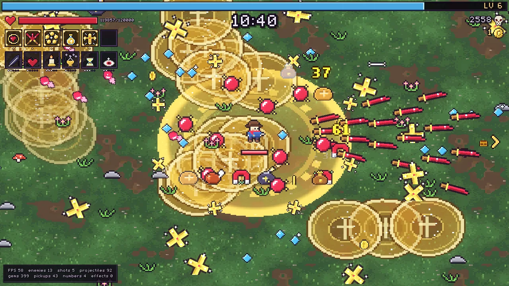
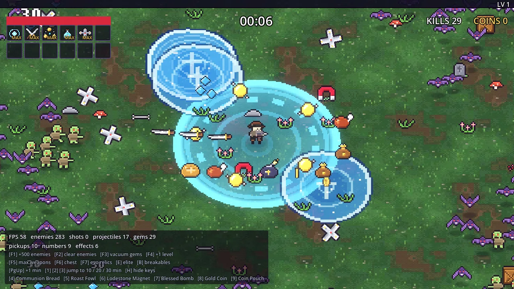

Pickup, Pecahan dan Game Feel
Game sudah bisa dimainkan; Fase 6 membuatnya terasa enak. Angka damage, ledakan darah, getaran layar, beku sesaat saat bom meledak. Juga makanan, magnet, bom, koin, dan lentera yang bisa dihancurkan, semuanya sebagai data.


Pickup sebagai data
Fase 4 punya satu jenis pickup (peti) yang ditandai dengan angka. Fase 6 menjadikannya Resource:
1class_name PickupData
2extends Resource
3## One kind of world pickup (data/pickups/*.tres). PickupField draws and
4## collects it; Game._on_pickup() applies `effect`. A new pickup = a .tres +
5## a row in art/sprites/pickups.png (+ an Effect branch if it does something new)
6## + an entry in PickupField.types (main.tscn) and in a DropTable.
7
8## Stored as int in .tres: append only.
9enum Effect {
10 CHEST, ## opens the chest screen (Game.pending_chests)
11 HEAL, ## heals `amount` x max HP
12 MAGNET, ## every gem (and magnetic pickup) flies to the player
13 BOMB, ## `amount` x wave HP scale to every enemy in Game.bomb_radius (bosses less)
14 COIN, ## +`amount` coins (Game.coins, kept by the meta shop in phase 8)
15}
16
17@export var id: StringName
18@export var display_name := ""
19@export var effect := Effect.HEAL
20@export var amount := 0.0
21## Row in art/sprites/pickups.png (4 frames: shine / spin).
22@export var sprite_row := 0
23@export var scale := 1.0
24## Relative weight inside a DropTable.
25@export var drop_weight := 1.0
26## Weight is multiplied by LUCK (rare finds get likelier).
27@export var luck_weighted := false
28## Pulled in by the player's magnet radius like gems, and by MAGNET pickups.
29@export var magnetic := false
30## Row in art/sprites/effects.png played where it is collected (-1 = none).
31@export var collect_effect := 4Ada 7 file di data/pickups/. Efeknya diterapkan di satu tempat, Game._on_pickup, karena efek menyentuh banyak sistem (pemain, gem, swarm, kamera):
422func _on_pickup(data: PickupData, at: Vector2) -> void:
423 effects.spawn(at, data.collect_effect, 1.0, 0.35, 0.2)
424 match data.effect:
425 PickupData.Effect.CHEST:
426 pending_chests += 1
427 Audio.play_sfx(&"pickup")
428 PickupData.Effect.HEAL:
429 var before := player.hp
430 player.heal(player.max_hp * data.amount)
431 numbers.add(player.pos2, player.hp - before, DamageNumberField.HEAL)
432 Audio.play_sfx(&"heal")
433 PickupData.Effect.MAGNET:
434 gems.attract_all()
435 pickups.attract_all()
436 Audio.play_sfx(&"pickup")
437 PickupData.Effect.BOMB:
438 detonate_bomb(player.pos2, data.amount * director.hp_scale())
439 PickupData.Effect.COIN:
440 add_coins(data.amount)
441 Audio.play_sfx(&"coin")PickupField.tick() tidak menerapkan apa pun: ia mengembalikan indeks jenis yang terkumpul dan posisinya. Alasan yang sama seperti layar = view: sistem dunia tidak memutuskan aturan game.
DropTable dan LUCK
1class_name DropTable
2extends Resource
3## Weighted pickup roll (data/drops/*.tres): `chance` (x LUCK) that anything
4## drops, then one of `items` by PickupData.drop_weight (x LUCK for
5## luck_weighted items).
6
7@export_range(0.0, 1.0, 0.0001) var chance := 0.01
8@export var items: Array[PickupData] = []
9
10
11## A pickup to drop, or null.
12func roll(luck: float) -> PickupData:
13 if items.is_empty() or randf() >= chance * luck:
14 return null
15 var total := 0.0
16 for it in items:
17 total += _weight(it, luck)
18 var r := randf() * total
19 for it in items:
20 r -= _weight(it, luck)
21 if r < 0.0:
22 return it
23 return items[-1]
24
25
26static func _weight(it: PickupData, luck: float) -> float:
27 return it.drop_weight * (luck if it.luck_weighted else 1.0)Dua tahap: peluang ada drop sama sekali (chance × LUCK, untuk musuh biasa 0,4%), lalu undian berbobot. Item dengan luck_weighted (mis. kantong koin) bobotnya dikali LUCK, sehingga relik Lucky Horseshoe membuat barang langka lebih sering, bukan hanya drop lebih banyak. Undian berbobot standar: jumlahkan bobot, ambil angka acak di [0, total), kurangi bobot satu per satu sampai negatif.
Objek pecahan: musuh yang tidak bergerak
Lentera yang bisa dipecah harus kena aura, pisau, manik, kolam, dan bom. Kalau dibuat sebagai sistem terpisah, setiap senjata butuh kode tambahan. Trik Fase 6: objek pecahan adalah slot EnemySwarm dengan perilaku STATIC dan flag PROP.
1class_name BreakableData
2extends EnemyData
3## A destructible prop (lantern, brazier, crate, grave cross). It lives in
4## EnemySwarm as a PROP slot with behavior STATIC, so every weapon (aura,
5## projectiles, orbit, ground zones) hits it through the same queries as
6## enemies, with the same hit flash and damage numbers. It deals no contact
7## damage, is not pushed, gives no XP and does not count as a kill; on death
8## it plays `death_effect` (its debris, the "broken" frames) and drops one
9## pickup from `drops` (BreakableSpawner keeps a few around the player).
10
11@export var drops: DropTableSemua jalur hit sudah memakai query_circle + damage_enemy, jadi pecahan langsung ikut kena, dengan hit flash dan angka damage gratis. Yang perlu dikecualikan hanya sedikit: separasi melewati PROP (tidak terdorong), collide_player melewatinya (tidak menyakiti), dan _on_enemy_died tidak menghitung kill/XP tapi memutar efek puing dan menjatuhkan pickup dari drops. BreakableSpawner menjaga beberapa pecahan ada di cincin 9–15 unit, kebanyakan di depan arah jalan pemain, dan membuang yang tertinggal jauh.
Angka damage: satu instance per angka
"1234" butuh empat digit. Cara naif: satu instance per digit. Cara proyek ini: satu quad per angka, lebarnya = jumlah digit, dan fragment shader memilih digit dari nilai di INSTANCE_CUSTOM.x.
38void fragment() {
39 float n = v_data.w;
40 float x = UV.x * n;
41 float k = floor(x);
42 // +0.001: pow() may land a hair off the exact power of ten.
43 float d = mod(floor(v_data.x / pow(10.0, n - 1.0 - k) + 0.001), 10.0);
44 vec4 c = texture(digits, vec2((d + fract(x)) / 10.0, UV.y));
45 int kind = int(v_data.z + 0.5);
46 vec3 tint = normal_color.rgb;
47 if (kind == 1) {
48 tint = crit_color.rgb * crit_energy;
49 } else if (kind == 2) {
50 tint = heal_color.rgb;
51 } else if (kind == 3) {
52 tint = hurt_color.rgb;
53 }
54 // White glyph pixels take the tint; the dark outline stays dark.
55 ALBEDO = c.rgb * tint * (1.0 - 0.25 * UV.y);
56 ALPHA = c.a * v_data.y;
57}Untuk piksel di posisi x = UV.x × n, digit ke-k = floor(x) dari kiri adalah floor(nilai / 10^(n-1-k)) mod 10. Contoh nilai 347, n = 3: k=0 → 347/100 = 3; k=1 → 34 mod 10 = 4; k=2 → 7. Lalu tekstur strip 0–9 disampel di (d + fract(x)) / 10. depth_test_disabled membuat angka selalu di atas dunia.
Di 1000 musuh, aura bisa menghasilkan ratusan hit per pulsa. Dua aturan menjaga jumlah angka:
93func add(at: Vector2, amount: float, k: int = NORMAL) -> void:
94 if amount <= 0.0 or not enabled:
95 return
96 var r2 := merge_radius * merge_radius
97 for j in range(count - 1, maxi(0, count - MERGE_SCAN) - 1, -1):
98 if kind[j] == k and age[j] < merge_window and pos[j].distance_squared_to(at) < r2:
99 value[j] = minf(MAX_VALUE, value[j] + amount)
100 age[j] = 0.0 # pops again
101 return
102 if count >= capacity or (k == NORMAL and count >= soft_cap):
103 return
104 var i := count
105 count += 1
106 pos[i] = at
107 value[i] = minf(MAX_VALUE, amount)
108 age[i] = 0.0
109 life_of[i] = crit_life if k == CRIT else life
110 kind[i] = k
111 jitter[i] = randf_range(-0.35, 0.35)- mergeHit dekat (< 0,7 unit) angka baru (< 0,15 dtk) yang jenisnya sama digabung: nilainya dijumlah dan umurnya di-reset sehingga angka "pop" lagi. Hanya 8 angka terbaru yang dicek (
MERGE_SCAN), jadi biayanya tetap kecil. - soft_capDi atas 220 angka hidup, hit NORMAL dibuang. Crit, heal, dan damage ke pemain tetap tampil karena itu informasi yang lebih penting.
Efek sekali main
EffectField memutar animasi 6 frame (asap, darah, ektoplasma, ledakan, kilau, heal, puing kayu/besi/batu/tulang) memakai shader billboard yang sama dengan fps = 0: dalam mode itu INSTANCE_CUSTOM.x berarti indeks frame, dihitung CPU dari umur efek. Baris efek kill dipilih dari EnemyData.death_effect; ukurannya ×2 untuk sprite besar, ×1,6 elite, ×3 boss + ledakan.
Shake dan hit-stop
Screen shake mengomunikasikan dampak. Masalahnya, shake yang terlalu sering melelahkan. Teknik trauma: setiap kejadian menambah nilai trauma 0..1 yang meluruh linear, dan offset kamera = trauma² × maks. Kuadrat membuat pukulan kecil nyaris tak terasa dan pukulan besar terasa jelas. Hit-stop membekukan simulasi beberapa puluh milidetik pada momen besar; otak membaca jeda itu sebagai "berat".
43func tick(dt: float, target: Vector3) -> void:
44 global_position = global_position.lerp(target, 1.0 - exp(-follow_sharpness * dt))
45 if _trauma > 0.0:
46 _trauma = maxf(0.0, _trauma - dt * 2.5)
47 var s := _trauma * _trauma * max_shake_offset
48 camera.h_offset = randf_range(-s, s)
49 camera.v_offset = randf_range(-s, s)
50 else:
51 camera.h_offset = 0.0
52 camera.v_offset = 0.0147func _process(delta: float) -> void:
148 if get_tree().paused:
149 return
150 if _hit_stop > 0.0:
151 _hit_stop -= delta
152 camera_rig.tick(delta, player.global_position)
153 returnHit-stop hanya tiga baris karena Game memegang urutan: selama _hit_stop > 0, hanya kamera yang di-tick, lalu return. Tidak ada Engine.time_scale yang ikut memperlambat UI atau tween. Dipakai untuk bom (0,08 dtk), boss mati (0,16 dtk), dan crit ke boss (0,035 dtk, maksimal sekali per 0,6 dtk supaya tidak tersendat terus).
Knockback juga mendapat batas di fase ini: knock = (knock + kb × (1 − resist)).limit_length(max_knock). Tanpa batas, musuh yang kena aura, salib, dan pisau di frame yang sama bisa terlempar ke luar layar.
- B menaruh satu dari tiap objek pecahan di depan pemain. Pecahkan dengan aura: ada efek puing + asap, lalu satu pickup jatuh.
- 4–9 menjatuhkan tiap pickup. Ambil bom: semua musuh di layar kena, layar bergetar keras, dunia membeku sekejap, proyektil musuh hilang.
- Angka damage putih; crit kuning lebih besar dan berpendar; heal hijau di atas pemain; damage ke pemain merah.
- Angka menampilkan digit salah (mis. 299 untuk 300). Presisi float pada
pow(). Shader menambah+0.001sebelumfloor. - Lentera terdorong musuh atau melukai pemain. Lupa mengecualikan
PROPdi separasi ataucollide_player. - Hit-stop membuat game terasa macet. Durasi terlalu panjang atau terlalu sering. Batasi dengan cooldown seperti
boss_crit_cooldown.
- Buat pickup "Holy Candle" yang memberi heal 10% (efek HEAL,
amount = 0.1) dan masukkan keenemy_drops.tres. Tidak perlu kode; tapi kamu perlu baris sprite baru dipickups.pngatau memakai baris yang ada. - Ubah
bomb_hit_stopdi Inspector Main ke 0,3 lalu ke 0. Mana yang terasa paling "berat" tanpa mengganggu? - Ubah
soft_capDamageNumberField ke 20 dan main di menit 15. Apakah informasi penting hilang?